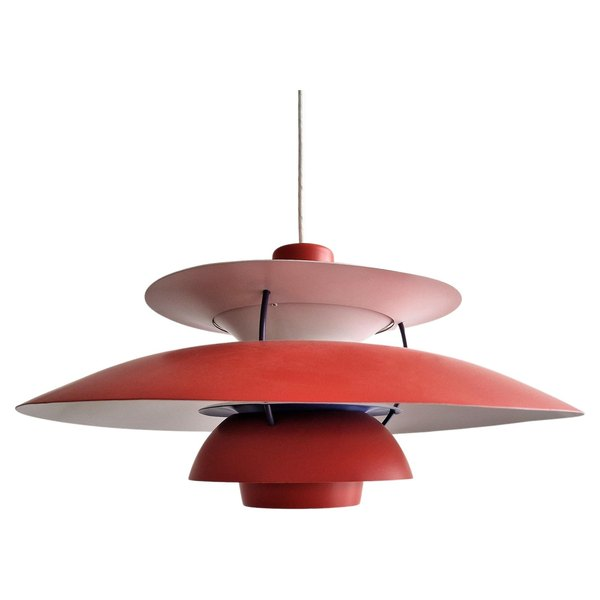
CRVI002723Poul Henningsen - PH 5 pendant
1958
1958
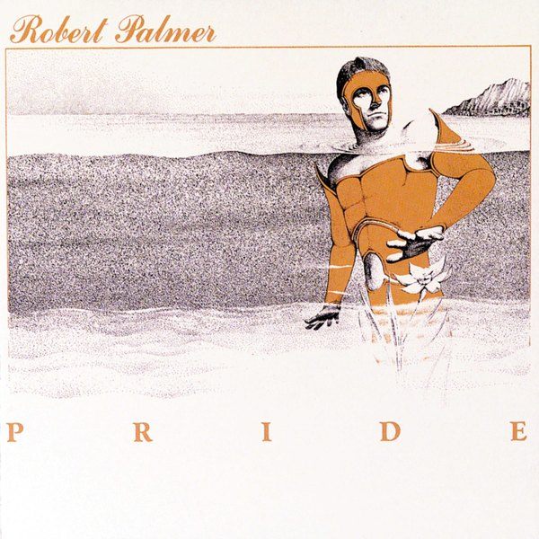
CRVI002910Bert Kitchen - Robert Palmer — Pride
1983
1983
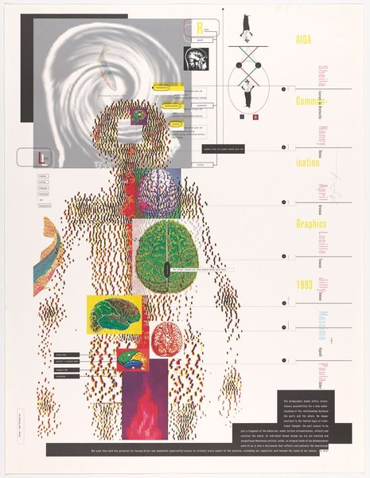
CRVI002855April Greiman - AIGA Comm Graphics
1994
1994
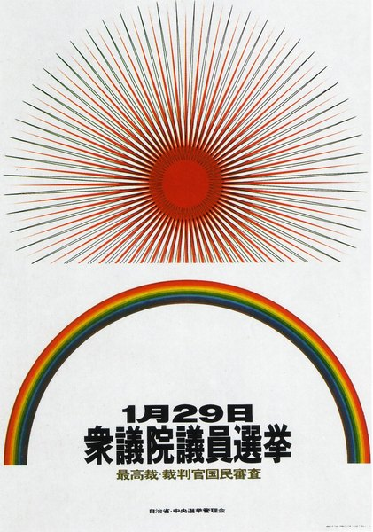
CRVI002667Yusaku Kamekura - 衆議院議員選挙 (House of Representatives election)
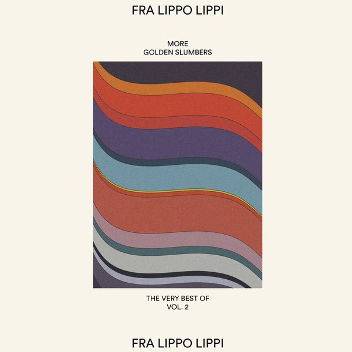
CRVI002889Kim Hiorthøy - Fra Lippo Lippi — More Golden Slumbers - The Very Best Of, Vol. 2
2025
2025
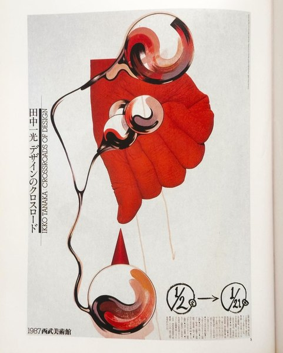
CRVI002956Ikko Tanaka - Ikko Tanaka — Design no Crossroad
1987
1987
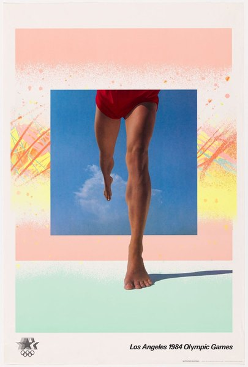
CRVI002853April Greiman and Jayme Odgers - Los Angeles 1984 Olympic Games
1984
1984
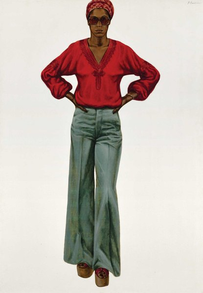
CRVI002767Barkley L. Hendricks - Brenda P
1974
1974
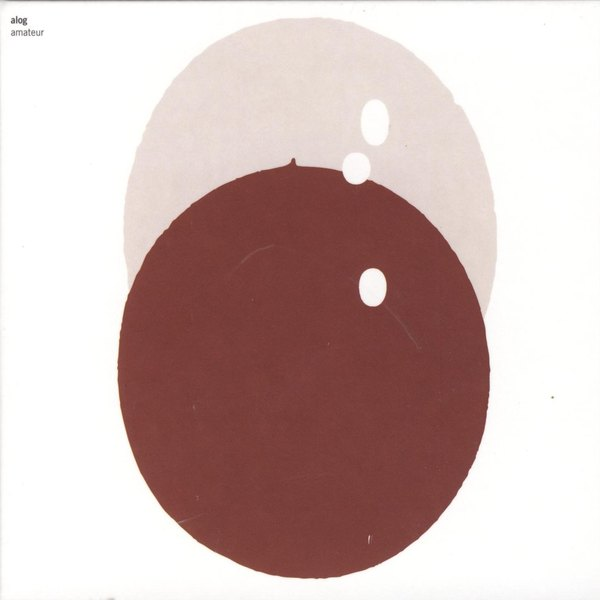
CRVI002872Kim Hiorthøy - Alog — Amateur
2007
2007
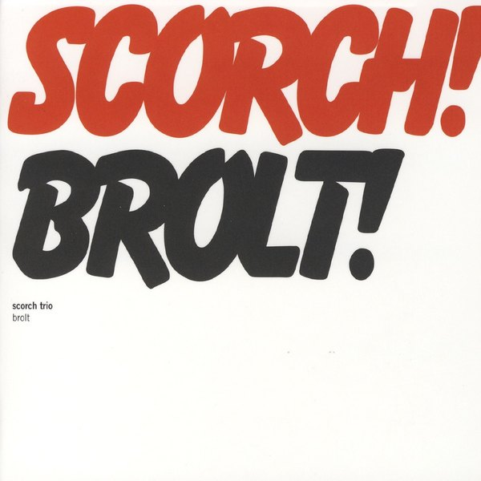
CRVI002987Kim Hiorthøy - Scorch Trio — Brolt
2008
2008
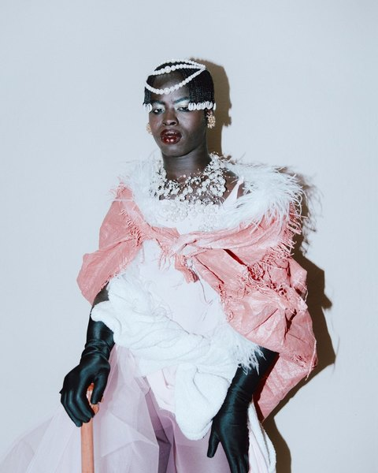
CRVI002748Unattributed - Untitled (pink and white ruffles)
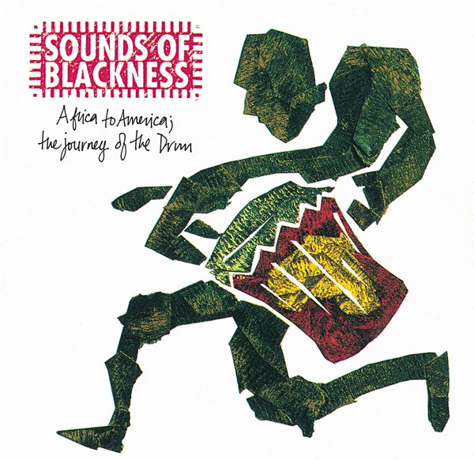
CRVI002611Sounds of Blackness - Africa to America: The Journey of the Drum
1994
1994

CRVI002682Kazumasa Nagai - Japanische Plakate – heute
2006
2006
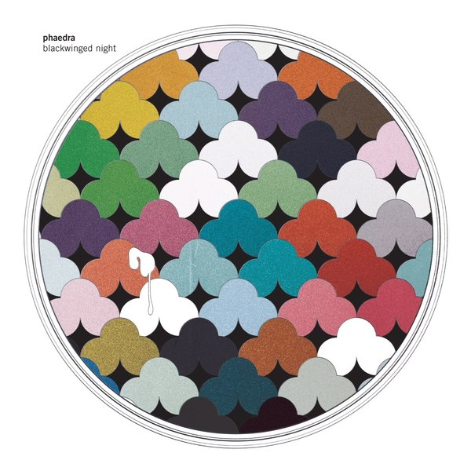
CRVI003009Kim Hiorthøy - Phaedra (12) — Blackwinged Night
2015
2015
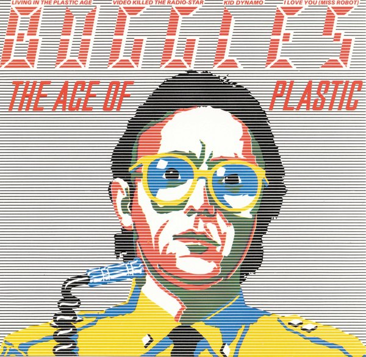
CRVI002913Unattributed - The Buggles — The Age Of Plastic
1980
1980
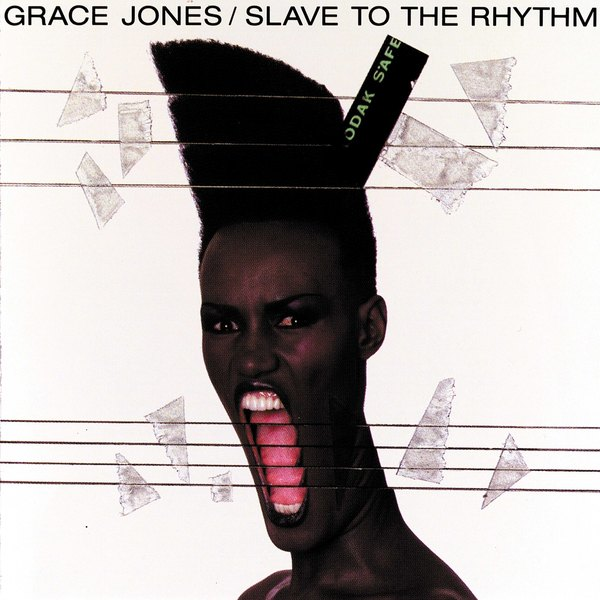
CRVI002904Jean-Paul Goude - Grace Jones — Slave To The Rhythm
1985
1985
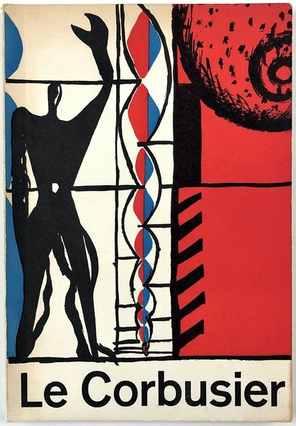
CRVI002841Unattributed - Le Corbusier
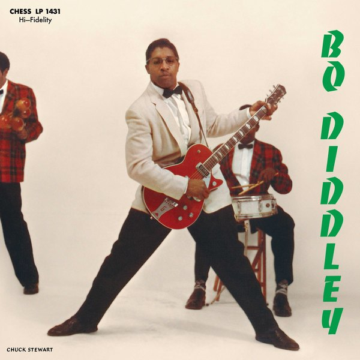
CRVI002550Bo Diddley - Bo Diddley
1958
1958
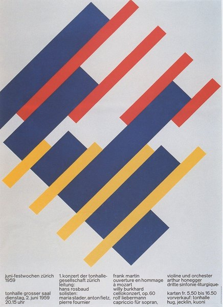
CRVI002513Josef Müller-Brockmann - Juni-Festwochen Zürich 1959
1959
1959
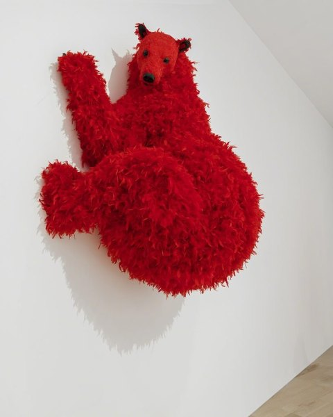
CRVI003059Paola Pivi - untitled
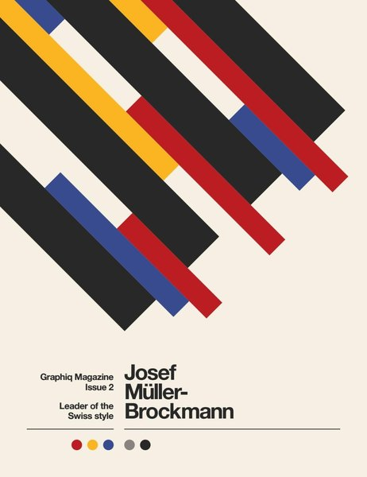
CRVI002520Unattributed - Graphiq Magazine Issue 2: Josef Müller-Brockmann, Leader of the Swiss style
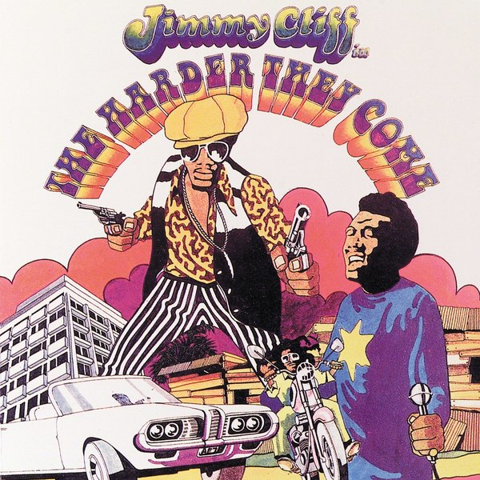
CRVI002905CCS (2) - Jimmy Cliff — The Harder They Come
1972
1972
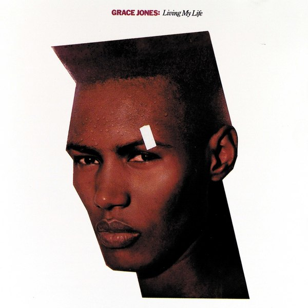
CRVI002902Jean-Paul Goude - Grace Jones — Living My Life
1982
1982

CRVI000837Ottagono - Ottagono 66
settembre 1982 · anno 17 · 1982
settembre 1982 · anno 17 · 1982
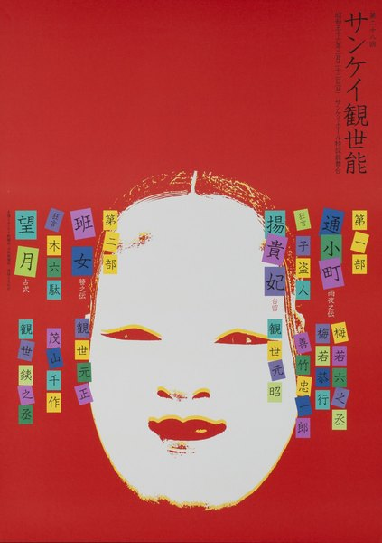
CRVI002669Ikko Tanaka - サンケイ観世能 (Sankei Kanze Noh)
CRVI002908Reid Miles - Red Garland — Red Garland's Piano
1957
1957
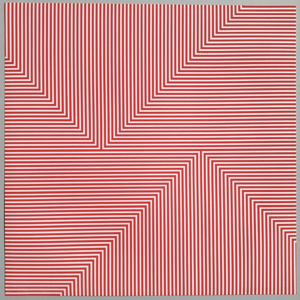
CRVI001845Unidentified - Red and white zigzag composition
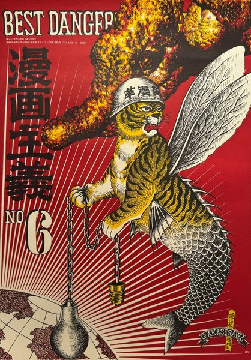
CRVI002653Unattributed - 漫画宝島 No. 6: BEST DANGEROUS

CRVI002238Gunta Stölzl - Jacquard weaving
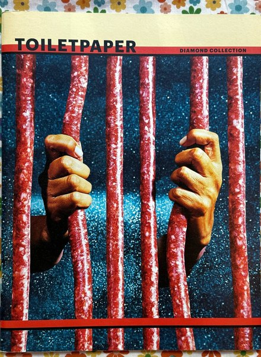
CRVI002840Maurizio Cattelan and Pierpaolo Ferrari - Toilet Paper, Diamond Collection
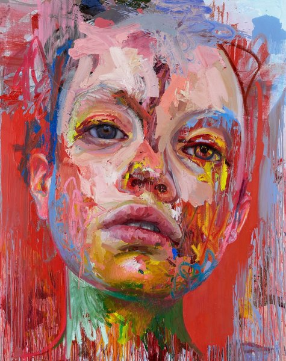
CRVI002045Jenny Saville - Rupture
2020
2020
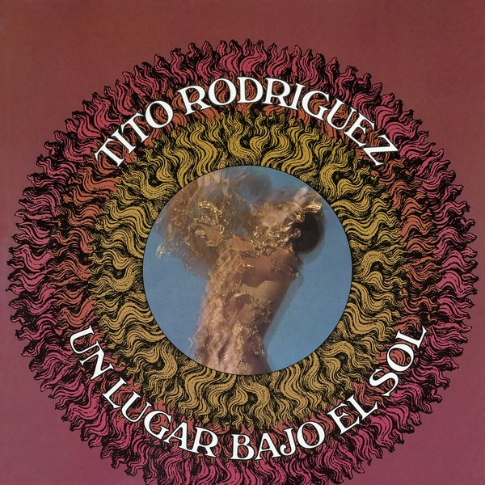
CRVI002620Tito Rodríguez - Un Lugar Bajo El Sol
1969
1969

CRVI000038John Cage - Early Electronic And Tape Music
Designed by Mountain · Sub Rosa · 2014
Designed by Mountain · Sub Rosa · 2014
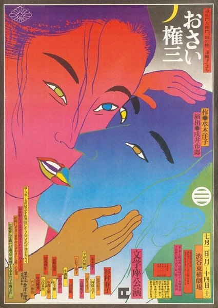
CRVI002649Kiyoshi Awazu - おさい権三 (Osai and Gonza)
1973
1973

CRVI000336The Bar-Kays - Soul Finger
Designer unknown · Volt · 1967
Designer unknown · Volt · 1967
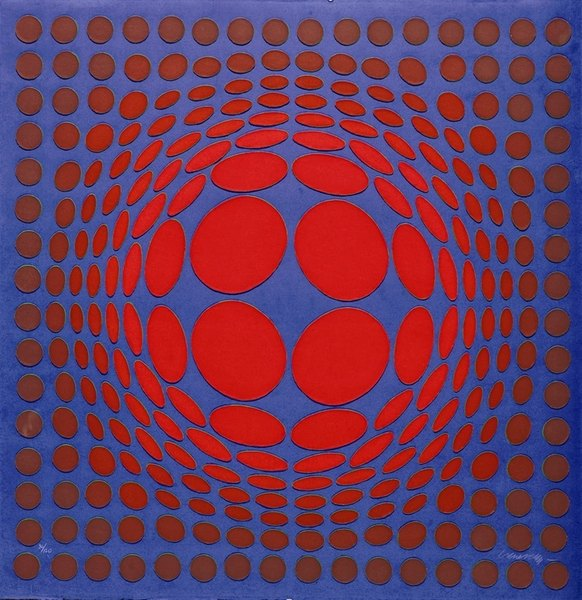
CRVI001827Victor Vasarely - Sinlag II (Blue with Red)
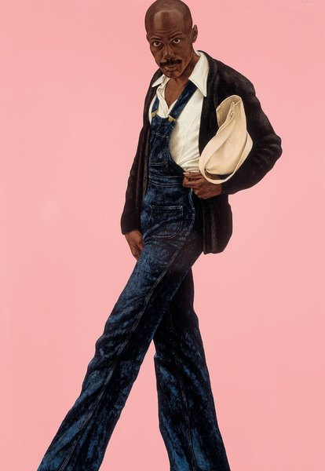
CRVI002765Barkley L. Hendricks - Misc. Tyrone (Tyrone Smith)
1976
1976
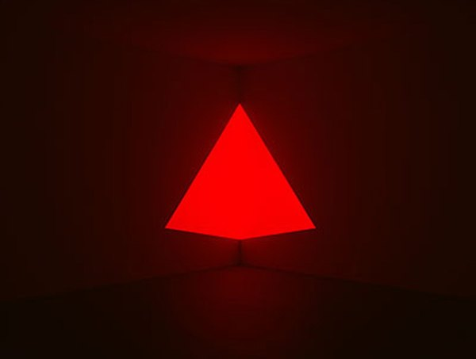
CRVI001914James Turrell - Raethro (Red)
1968
1968

CRVI000684C.A. Wisely - Ghost World
Hand-painted Ghanaian film poster
Hand-painted Ghanaian film poster

CRVI001158John Scofield - Hand Jive
Designed by Mark Larson, photograph by Patti Perret · Blue Note CDP 7243 8 27327 2 3 · 1994
Designed by Mark Larson, photograph by Patti Perret · Blue Note CDP 7243 8 27327 2 3 · 1994
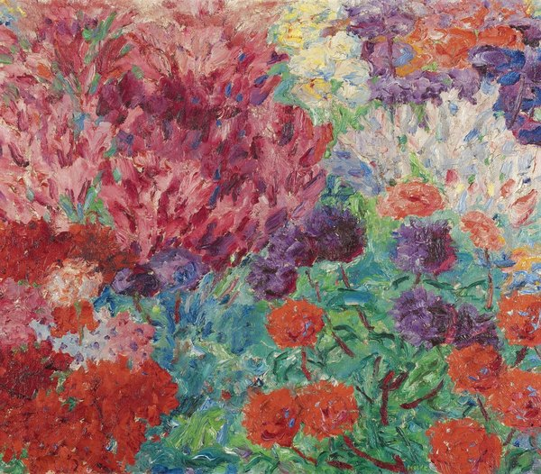
CRVI002388Emil Nolde - Blumengarten, ohne Figur
1908
1908

CRVI001201Osibisa - Heads
Painting by Mati Klarwein · Decca · 1972
Painting by Mati Klarwein · Decca · 1972
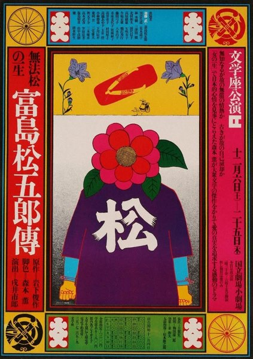
CRVI002955Kiyoshi Awazu - Muhōmatsu no Isshō / Tomishima Matsugorō Den
1969
1969
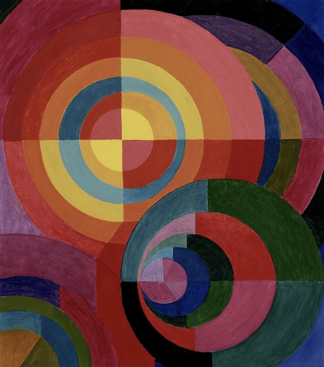
CRVI002240unattributed - Overlapping concentric colour discs, quartered

CRVI000482Graeme James - War and AI
The Economist, June 22-28, 2024 · 2024
The Economist, June 22-28, 2024 · 2024

CRVI000681Heavy J - Akira
Hand-painted Ghanaian mobile cinema poster
Hand-painted Ghanaian mobile cinema poster
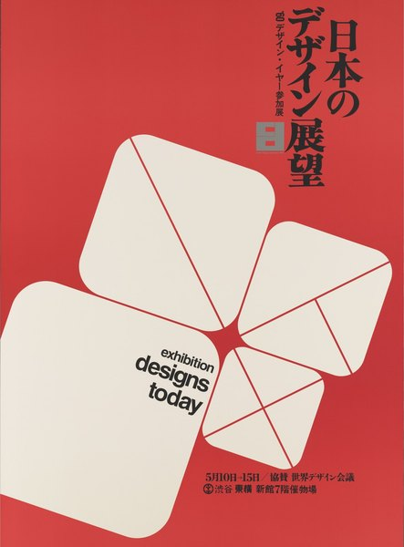
CRVI002679Kazumasa Nagai - 日本のデザイン展望 (Exhibition Designs Today)
1960
1960

CRVI000121Tadanori Yokoo - Word & Image
The Museum of Modern Art, New York, January 24 – March 10 · 1968
The Museum of Modern Art, New York, January 24 – March 10 · 1968

CRVI000116Tadanori Yokoo - Made in Japan, Tadanori Yokoo, Having Reached a Climax at the Age of 29, I Was Dead
Self-portrait poster · 1965
Self-portrait poster · 1965
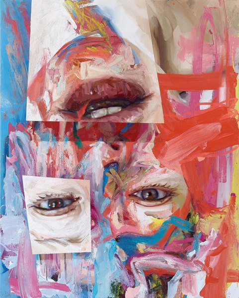
CRVI002047Jenny Saville - Untitled
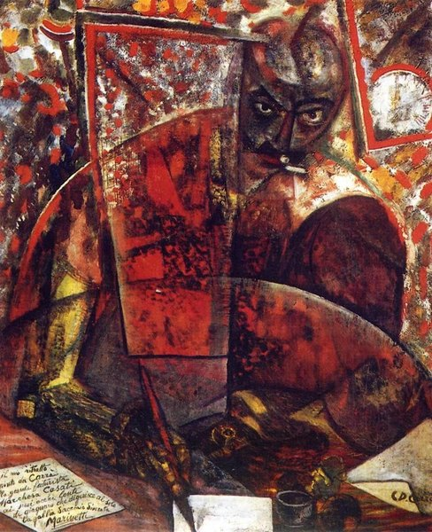
CRVI001679Carlo Carrà - Portrait of Marinetti
1915
1915

CRVI000318Tosca - Suzuki
Designer unknown · G-Stone · 2000
Designer unknown · G-Stone · 2000

CRVI000580Alvin Lustig - Staff
Look magazine staff publication · cover dated 3·28·44 · 1944–45
Look magazine staff publication · cover dated 3·28·44 · 1944–45

CRVI000762Jakub Erol - Obcy — 8 pasażer „Nostromo”
Alien · Polish film poster · 1980
Alien · Polish film poster · 1980
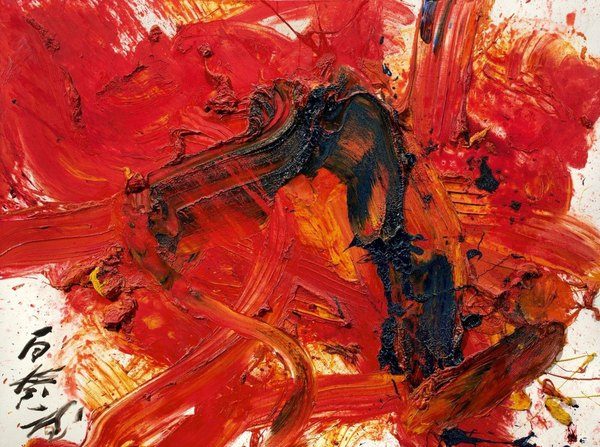
CRVI001777Unidentified - Red impasto composition

CRVI000137Shigeo Fukuda - [Poster: ring of figures on dark red]
Title not established
Title not established

CRVI000432Belle and Sebastian - If You're Feeling Sinister
Designer unknown · Jeepster Records · 1996
Designer unknown · Jeepster Records · 1996
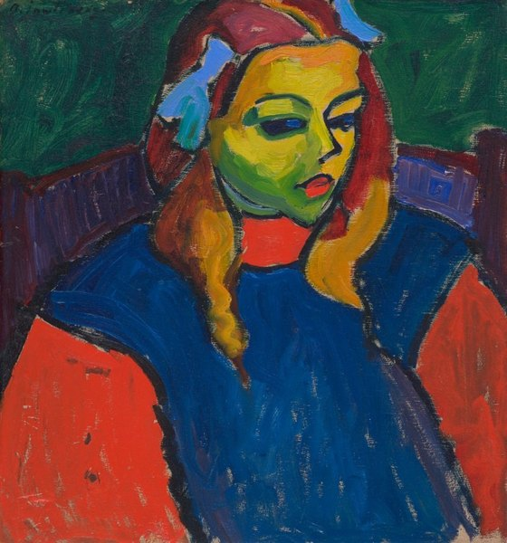
CRVI001709Alexej von Jawlensky - Girl with the Green Face
1910
1910
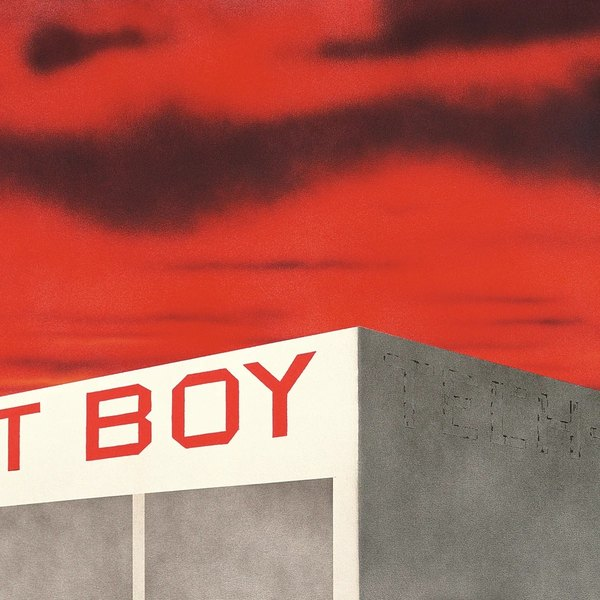
CRVI002331Ed Ruscha - Building under a red sky

CRVI000136Shigeo Fukuda - [Poster: figure walking off a curling sheet of paper]
Title not established
Title not established

CRVI000619Gail Bichler - Is Google Too Powerful?
The New York Times Magazine, February 25 2018 · 2018
The New York Times Magazine, February 25 2018 · 2018
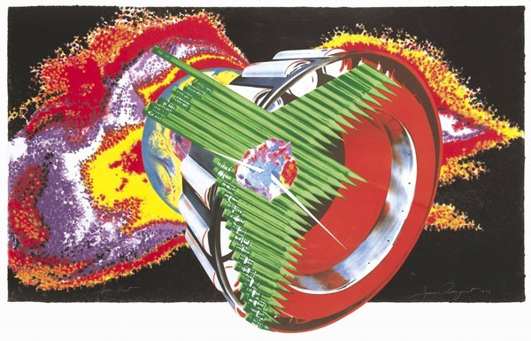
CRVI001809James Rosenquist - Space Dust
1989
1989

CRVI000149Shigeo Fukuda - The Marriage of Figaro - Teatr Narodowy Warsaw
Designed by Shigeo Fukuda
Designed by Shigeo Fukuda
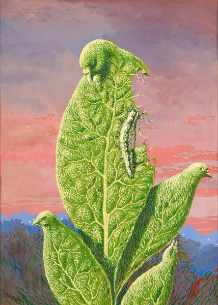
CRVI002353René Magritte - The Flavour of Tears (La saveur des larmes)

CRVI000534D.W. Pine - Delete 'Facebook'?
TIME, October 25-November 1, 2021 · 2021
TIME, October 25-November 1, 2021 · 2021
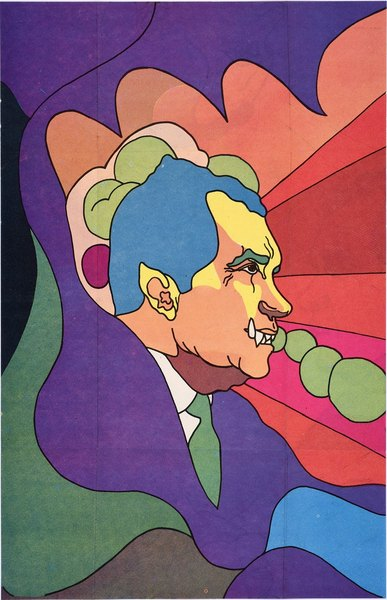
CRVI002945Alfredo Rostgaard - Nixon
1969
1969
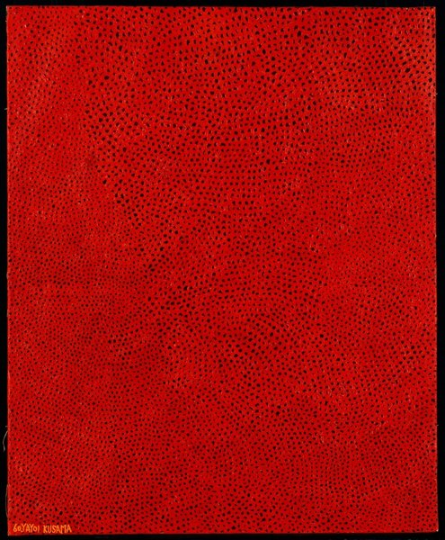
CRVI001951Yayoi Kusama - No. I.Z
1960
1960

CRVI000832Seymour Chwast - Cars IV
Lithograph · calendar page · 30 × 48 cm · 1996
Lithograph · calendar page · 30 × 48 cm · 1996

CRVI000035Lee Bannon - Fantastic Plastic
Artwork by Lazerus Pit · 2012
Artwork by Lazerus Pit · 2012

CRVI000052Com Truise - Galactic Melt
Artwork by Seth Haley · 2011
Artwork by Seth Haley · 2011

CRVI000644Billy Sorrentino - The End of Code
WIRED, June 2016 · 2016
WIRED, June 2016 · 2016
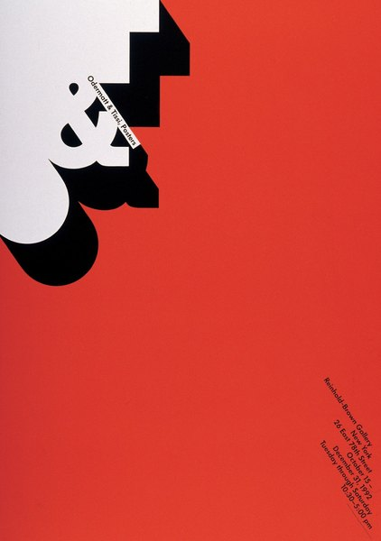
CRVI002800Siegfried Odermatt - Untitled (ampersand)
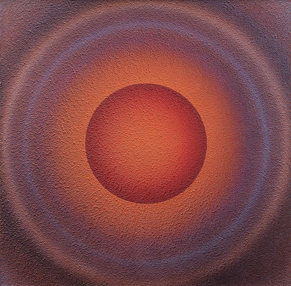
CRVI001851Tadasky - E-137A

CRVI000051Tycho - Epoch
Designed by Scott Hansen · 2017
Designed by Scott Hansen · 2017
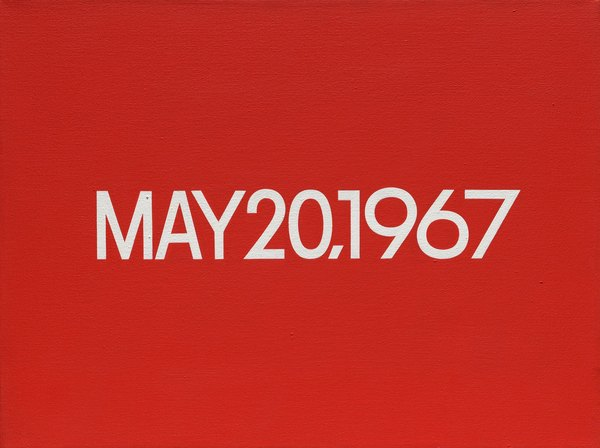
CRVI001900On Kawara - May 20, 1967
Today series · 1967
Today series · 1967

CRVI000184Designer unknown - Швейныя машины Компаніи Зингеръ — Singer Company Sewing Machines
Russian Singer emblem · advertising poster
Russian Singer emblem · advertising poster
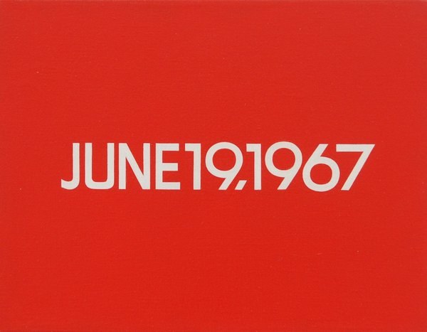
CRVI001897On Kawara - June 19, 1967
Today series, No. 108 · 1967
Today series, No. 108 · 1967

CRVI000138Shigeo Fukuda - [Poster: red arches with figures]
Title not established
Title not established

CRVI000380Basil Kirchin - Quantum
Designer unknown · Trunk · 2003
Designer unknown · Trunk · 2003

CRVI001241Mati Klarwein - Godmother
Painting · plate V25-Godmother on the artist's own site
Painting · plate V25-Godmother on the artist's own site
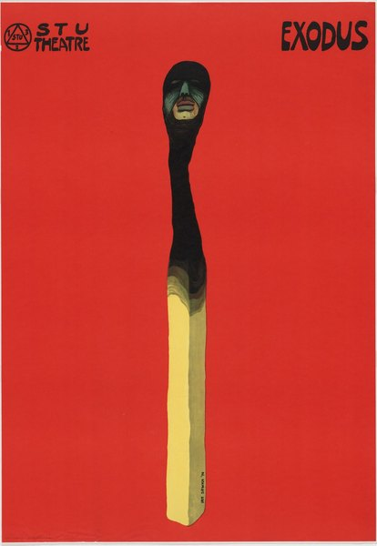
CRVI002373Jan Sawka - Exodus (poster for STU's premiere of Leszek Moczulski's production)
1974
1974

CRVI001377Thelonious Monk Trio - Thelonious Monk Trio
Designer unrecorded · Esquire 75 · 1956
Designer unrecorded · Esquire 75 · 1956

CRVI000791Paul Rand - Direction Magazine exhibition poster
Offset lithograph, 1970 printing of the 1939 design · 91.4 × 61 cm · 1939
Offset lithograph, 1970 printing of the 1939 design · 91.4 × 61 cm · 1939

CRVI000787Paul Rand - Jazzways
A Year Book of Hot Music · 1946
A Year Book of Hot Music · 1946
CRVI002668Ikko Tanaka - Untitled (face in concentric arcs)

CRVI000786Paul Rand - Sources and Resources of 20th Century Design
International Design Conference in Aspen · 1966
International Design Conference in Aspen · 1966
CRVI002490Bruno Munari - Negativo-Positivo
CRVI002496Kiyoshi Awazu - Red and orange arcs on a dark ground
CRVI002787Jan Lenica - Jan Lenica: Plakat & Film
1983
1983
CRVI002711Shin Matsunaga - Rights of Humankind
1989
1989
CRVI002145Barbara Kruger - Untitled (I shop therefore I am)

CRVI001056Takenobu Igarashi - Cover for IDEA No. 130
Magazine cover · Seibundo Shinkosha, Tokyo · 1975
Magazine cover · Seibundo Shinkosha, Tokyo · 1975
CRVI002684Shigeo Fukuda - Happy Earthday
1982
1982
CRVI001952Unidentified - Yayoi Kusama before an Infinity Net

CRVI001271Art Blakey & The Jazz Messengers - Indestructible
Designed by Reid Miles, photograph by Francis Wolff · Blue Note 4193 · 1966
Designed by Reid Miles, photograph by Francis Wolff · Blue Note 4193 · 1966

CRVI001199The Last Poets - This Is Madness
Painting by Mati Klarwein · Douglas 7 · 1971
Painting by Mati Klarwein · Douglas 7 · 1971

CRVI001187Mati Klarwein - The Last Poets, This Is Madness — back cover painting
Painting · 1971
Painting · 1971

CRVI001192Mati Klarwein - Jimi Hendrix
Painting
Painting
CRVI001775Jirō Yoshihara - Circle

CRVI001039Kiyoshi Awazu - Untitled poster
AGI (Alliance Graphique Internationale) member archive
AGI (Alliance Graphique Internationale) member archive
CRVI002247Mark Rothko - Untitled

CRVI000413Redhead Kingpin & The F.B.I. - A Shade Of Red
Designer unknown · Virgin · 1990
Designer unknown · Virgin · 1990
CRVI002491Kiyoshi Awazu - 花の館 (Hana no Yakata), Bungakuza

CRVI001222Mati Klarwein - Untitled
Painting · plate P16-vol2-87 on the artist's own site
Painting · plate P16-vol2-87 on the artist's own site

CRVI000576Alvin Lustig - Illuminations
Arthur Rimbaud · New Directions, New Classics NC14 · 1945
Arthur Rimbaud · New Directions, New Classics NC14 · 1945
CRVI001825Victor Vasarely - Keiho-C1
1963
1963

CRVI000198Unknown - Nope
Reaction GIF · 77 frames, 3.9s loop
Reaction GIF · 77 frames, 3.9s loop

CRVI000575Alvin Lustig - Selected Poems
Ezra Pound · New Directions, New Classics NC22 · 1949
Ezra Pound · New Directions, New Classics NC22 · 1949
CRVI002109Hermann Nitsch - Zonder titel
CRVI002852April Greiman - Workspace
1987
1987

CRVI000853Richard Turley - [MTV ident — Zen Jen]
MTV ident · animated
MTV ident · animated
CRVI002583Ismael Rivera y sus Cachimbos - Traigo de Todo
1974
1974

CRVI000630D.W. Pine, Peter Greenwood - Dear Washington, We Need to Rebuild. Can You Get Your Act Together?
TIME, April 10, 2017 · 2017
TIME, April 10, 2017 · 2017

CRVI000550D.W. Pine - Day One.
TIME, February 1-8, 2021 · 2021
TIME, February 1-8, 2021 · 2021

CRVI000690Heavy J - Battle Royale
Hand-painted Ghanaian film poster
Hand-painted Ghanaian film poster
CRVI001713Alexej von Jawlensky - Bretonische Bäuerin
1905
1905
CRVI001743Rudolf Schlichter - Lady with a Red Scarf

CRVI001048 - ANTI-WAR AND LIBERATION

CRVI000875John Provencher - [Bloomberg, weather]
Bloomberg Businessweek
Bloomberg Businessweek

CRVI000713Helado Negro - The Last Sound On Earth
Designed by Robert Beatty · 2025
Designed by Robert Beatty · 2025

CRVI000132Tadanori Yokoo - The 5th International Biennial Exhibition of Prints in Tokyo
The National Museum of Modern Art, Tokyo · 11.2–12.15 · 1966
The National Museum of Modern Art, Tokyo · 11.2–12.15 · 1966
CRVI001691Luigi Russolo - La Rivolta
1911
1911

CRVI000862Julian Stanczak - Sequential Chroma
Screen print on paper · 76.8 × 65.4 cm · 1978
Screen print on paper · 76.8 × 65.4 cm · 1978

CRVI000700Heavy J - Sister Act
Hand-painted Ghanaian film poster
Hand-painted Ghanaian film poster
CRVI002563Chuck Berry - Berry Is On Top
1959
1959

CRVI000373Mint Condition - Meant To Be Mint
Designer unknown · Perspective · 1991
Designer unknown · Perspective · 1991
CRVI002221Anni Albers - Design for a 1926 unexecuted wall hanging
1926
1926
CRVI001855Davis Lisboa - Robert Filliou 32
2024
2024

CRVI001810Tom Wesselmann - Still life
1963
1963

CRVI000546Emily Kimbro - The 50 Best BBQ Joints
Texas Monthly, November 2021 · 2021
Texas Monthly, November 2021 · 2021
CRVI001787Unidentified - Red chevron composition
CRVI002867Kim Hiorthøy - Spunk — Filtered Through Friends
2001
2001

CRVI001079Kim Laughton - Untitled

CRVI001043Kiyoshi Awazu - Contemporary Print Exhibition, 50 Earlham Street Gallery, London
Poster · 1981
Poster · 1981

CRVI000840Ottagono - Ottagono 70
settembre 1983 · anno 18 · 1983
settembre 1983 · anno 18 · 1983

CRVI000491Matt Huynh - If Trump Wins
The Atlantic, January/February 2024 · 2024
The Atlantic, January/February 2024 · 2024

CRVI000444David Pelham - The Drought
Cover for J. G. Ballard · Penguin Science Fiction · 1974
Cover for J. G. Ballard · Penguin Science Fiction · 1974
CRVI001635Emil Nolde - Mask Still Life III
1911
1911

CRVI000709Heavy J - I Think You Should Leave
Hand-painted Ghanaian film poster
Hand-painted Ghanaian film poster

CRVI001045Kiyoshi Awazu - Untitled poster
CRVI002410Peter Max - The American Traveler Spreading Good Times
1976
1976
CRVI002503Milton Glaser - Untitled (mouth with a landscape)
CRVI001976Unidentified - Head against a floral ground
CRVI002147Barbara Kruger - Installation with text
CRVI003025Kim Hiorthøy - Alog — Red Shift Swing
1999
1999

CRVI000632Michael Goesele, Justin Metz - Pop Go the Weasels
Newsweek, November 17, 2017 · 2017
Newsweek, November 17, 2017 · 2017

CRVI000702Heavy J - Raising Arizona
Hand-painted Ghanaian film poster
Hand-painted Ghanaian film poster
CRVI002670Unattributed - 世界のポスター展 (World Poster Exhibition)
1982
1982

CRVI000512D.W. Pine - Unprecedented.
TIME, April 24/May 1, 2023 · 2023
TIME, April 24/May 1, 2023 · 2023
CRVI001690Luigi Russolo - Chioma
1910–1911
1910–1911
CRVI002385Emil Nolde - Crucifixion (Kreuzigung), centre panel of The Life of Christ
1912
1912

CRVI001113unattributed - Olivetti — cover with geometric panels
Designer unrecorded
Designer unrecorded
CRVI001981Amy Sherald - Woman in a spotted dress
CRVI001817Pauline Boty - With Love to Jean-Paul Belmondo
CRVI002716Eiko Ishioka - 西洋は東洋を着こなせるか (Can West Wear East?)
1979
1979
CRVI002419Gustav Klutsis - Let's Fulfill the Plan of Great Works
1930
1930
CRVI001931Julian Schnabel - Plate painting
CRVI001798Jasper Johns - Target with Plaster Casts
1955
1955

CRVI000715Hunx And His Punx - Walk Out On This World
Designed by Robert Beatty · 2025
Designed by Robert Beatty · 2025
CRVI003022Kim Hiorthøy - Ivar Grydeland & Henry Kaiser — In The Arctic Dreamtime
2020
2020
CRVI002925Corita Kent - e eye love
1968
1968
CRVI002362Amy Sherald - As Soft as She Is…
2022
2022

CRVI001285The Gil Mellé Quartet - Mellé Plays Primitive Modern
Designer unrecorded · Prestige 7040 · 1956
Designer unrecorded · Prestige 7040 · 1956
CRVI002663Koichi Enomoto - 光 / LIGHT
CRVI002514Josef Müller-Brockmann - Opernhaus Zürich: Cavalleria rusticana / I Pagliacci
1973
1973

CRVI001128Donald Byrd - Black Byrd
Artwork by Eileen Anderson, photograph by Art Hanson · Blue Note BN-LA047-F · 1973
Artwork by Eileen Anderson, photograph by Art Hanson · Blue Note BN-LA047-F · 1973
CRVI002991Kim Hiorthøy - Bushman's Revenge — Jitterbug
2010
2010
CRVI002556Celia Cruz - Mi Coro

CRVI002529Mingering Mike - From Our Mind to Yours
CRVI002484Ray Barretto - The Other Road
1973
1973
CRVI001838Carlos Cruz-Diez - Couleur additive
1970
1970
CRVI002828George Giusti - Graphis Annual 63/64
1963
1963

CRVI000847domus - domus 1112
May 2026 · 2026
May 2026 · 2026

CRVI001092Kim Laughton - Untitled
CRVI002845Walter Ballmer - Stile Olivetti
1961
1961

CRVI000761Waldemar Świerzy - Czas apokalipsy
Apocalypse Now · Polish film poster · 1981
Apocalypse Now · Polish film poster · 1981
CRVI002099Gilbert & George - Doubles

CRVI000545James Van Fleteren - Build a Better Breakfast Sandwich
EatingWell, May 2021 · 2021
EatingWell, May 2021 · 2021

CRVI001216Pharoah Sanders - Karma
Designed by Robert & Barbara Flynn, photograph by Chuck Stewart · Impulse! AS-9181 · 1969
Designed by Robert & Barbara Flynn, photograph by Chuck Stewart · Impulse! AS-9181 · 1969
CRVI002664Yusaku Kamekura - 富士フォトコンテスト 1955 (Fuji Photo Contest)
1955
1955

CRVI001223Mati Klarwein - Untitled
Painting · plate P17-vol2-87 on the artist's own site
Painting · plate P17-vol2-87 on the artist's own site
CRVI001780Atsuko Tanaka - Electric Dress
1956
1956

CRVI000730Robert Beatty - Floodgate Companion
Spread · self-published
Spread · self-published
CRVI002909Graham Hughes - Robert Palmer — Clues
1980
1980
CRVI002382Alan Aldridge - Head composed of figures
1971
1971
CRVI001628Kees van Dongen - Modjesko, Soprano Singer
1908
1908
CRVI002993Kim Hiorthøy - Alog — Unemployed
2011
2011
CRVI001666Robert Delaunay - Rythme n° 1
1912
1912
CRVI002364Bruno Munari - Negative-Positive
1991
1991
CRVI003024Kim Hiorthøy - I Like To Sleep — Sleeping Beauty
2022
2022

CRVI001047 - Japanese poster for Jean-Luc Godard's 'Week End'
Film poster
Film poster
CRVI003054Sheila Hicks - untitled
CRVI002016Zeng Fanzhi - Van Gogh

CRVI000698Heavy J - Tampopo
Hand-painted Ghanaian film poster
Hand-painted Ghanaian film poster
CRVI002168Fernando Botero - The Study of Vermeer

CRVI001245Mati Klarwein - Clone (unfinished)
Painting · plate V32-clone-unfinished on the artist's own site
Painting · plate V32-clone-unfinished on the artist's own site
CRVI002156William Eggleston - Untitled

CRVI001249Mati Klarwein - Nativity
Painting · plate V03-Nativity on the artist's own site
Painting · plate V03-Nativity on the artist's own site

CRVI000725The Weeknd - Dawn FM
Designed by Robert Beatty · 2022
Designed by Robert Beatty · 2022
CRVI001521Barnett Newman - Onement I
1948
1948
CRVI001710Alexej von Jawlensky - Portrait of Alexander Sakharoff
1909
1909
CRVI001793Jules Olitski - Born in Snovsk
1962
1962
CRVI002953Mitsuo Katsui - poster

CRVI001164Lee Morgan - Cornbread
Designed by Reid Miles, photograph by Francis Wolff · Blue Note BST 84222 · 1967
Designed by Reid Miles, photograph by Francis Wolff · Blue Note BST 84222 · 1967

CRVI000784Ivan Chermayeff - By the Sword Divided
Mobil Masterpiece Theatre · 1986
Mobil Masterpiece Theatre · 1986
CRVI002926Corita Kent - one nation

CRVI000711Tame Impala - Disciples
Designed by Robert Beatty · 2015
Designed by Robert Beatty · 2015
CRVI002405Peter Max - Two seated figures
CRVI003038Leon Golub - Mercenaries III

CRVI000445John Griffith - The Black Cloud
Cover for Fred Hoyle · Penguin
Cover for Fred Hoyle · Penguin
CRVI001638Emil Nolde - Red-Haired Girl
1919
1919
CRVI002552Celia Cruz and Tito Puente - Alma Con Alma: The Heart & Soul of Celia Cruz & Tito Puente
1970
1970
CRVI002548Felice Rix-Ueno - Gespinst
1924
1924

CRVI000848form - form 8
Internationale Revue · 1959 · 1959
Internationale Revue · 1959 · 1959
CRVI002884Kim Hiorthøy - Elephant9 — Arrival Of The New Elders
2021
2021
CRVI001532Alexandre Hogue - Crucified Land
1939
1939
CRVI002022Bharti Kher - Untitled

CRVI000843domus - domus 1109
February 2026 · 2026
February 2026 · 2026

CRVI001108Martin Wong - Portrait of Mikey Piñero at Ridge Street and Stanton
Acrylic on canvas, 72 × 72 in · also titled “La Vera de Nuyorico: Miguel Piñero” · 1985
Acrylic on canvas, 72 × 72 in · also titled “La Vera de Nuyorico: Miguel Piñero” · 1985
CRVI001714Heinrich Campendonk - Bucolic Landscape
1913
1913

CRVI001030Adrian Ghenie - Untitled painting
Oil on canvas · Sold Sotheby's London
Oil on canvas · Sold Sotheby's London
CRVI002505Milton Glaser - Mahalia Jackson - Easter Sunday - Philharmonic Hall, Lincoln Center
1967
1967

CRVI001042Kiyoshi Awazu - Poster Nippon
Screenprint · LACMA, Marc Treib Collection · 1972
Screenprint · LACMA, Marc Treib Collection · 1972

CRVI000187E. McKnight Kauffer - Point Counter Point
Dust jacket for Aldous Huxley's Point Counter Point · The Modern Library, New York · 1942
Dust jacket for Aldous Huxley's Point Counter Point · The Modern Library, New York · 1942
CRVI002832Maurizio Cattelan and Pierpaolo Ferrari - Toilet Paper, February 2012
2012
2012
CRVI002246Mark Rothko - Untitled
CRVI002560Charlie Palmieri y Su Orquesta - Vuelve El Gigante
1973
1973
CRVI002881Kim Hiorthøy - Elephant9 — Psychedelic Backfire I
2019
2019

CRVI000252Lech Majewski - Ras le cœur
Film Poster Designed By Lech Majewski · 1980 · 1980
Film Poster Designed By Lech Majewski · 1980 · 1980
CRVI001643Max Pechstein - Indian and Woman
1910
1910
CRVI002381Alan Aldridge - Captain Fantastic and the Brown Dirt Cowboy (album cover)
1975
1975

CRVI000682Mr. Nana Agyq - Gummo
Hand-painted Ghanaian film poster · after the film by Harmony Korine
Hand-painted Ghanaian film poster · after the film by Harmony Korine
CRVI001675Giacomo Balla - Self-Portrait
1902
1902

CRVI000425Bob Thompson and His Orchestra & Chorus - Just For Kicks
Designer unknown · RCA Victor · 1959
Designer unknown · RCA Victor · 1959

CRVI001142Jackie McLean - Demon's Dance
Designed by Bob Venosa, artwork by Mati Klarwein · Blue Note BST 84345 · 1970
Designed by Bob Venosa, artwork by Mati Klarwein · Blue Note BST 84345 · 1970

CRVI000032Earle Brown - Music By Earle Brown
Artwork by Judith Lerner · Composers Recordings Inc. · 1974
Artwork by Judith Lerner · Composers Recordings Inc. · 1974

CRVI000358Stevie Wonder - Fulfillingness' First Finale
Designer unknown · Tamla · 1974
Designer unknown · Tamla · 1974

CRVI001372Eric Dolphy - Out There
Cover painting by Richard “Prophet” Jennings · New Jazz 8252 · 1960
Cover painting by Richard “Prophet” Jennings · New Jazz 8252 · 1960
CRVI002973Kim Hiorthøy - Spunk — Den Øverste Toppen På En Blåmalt Flaggstang
2002
2002
CRVI001806James Rosenquist - Source for President Elect
1961
1961
CRVI001503Gustav Klutsis - Without Heavy Industry We Cannot Build Any Industry
Poster · 1930
Poster · 1930
CRVI002216Josef Albers - Homage to the Square
CRVI002970Zach Lieberman - generative work
CRVI002379Jan Sawka - Jan Sawka: Paintings & Constructions (exhibition poster)
1985
1985
CRVI002856Martha Rosler - Makeup/Hands Up, from House Beautiful: Bringing the War Home
1967
1967

CRVI001107Martin Wong - Psychiatrists Testify: Demon Dogs Drive Man to Murder
Acrylic on canvas, 36 × 48 in · also titled “Demon Dogs Drive Man to Murder” · 1980
Acrylic on canvas, 36 × 48 in · also titled “Demon Dogs Drive Man to Murder” · 1980
CRVI001545Lois Mailou Jones - Composition with African head and figure

CRVI000397Frankie Knuckles - Beyond The Mix
Designer unknown · Virgin · 1991
Designer unknown · Virgin · 1991
CRVI002537Koloman Moser - Ver Sacrum, poster for the XIII Secession exhibition
1902
1902

CRVI001228Mati Klarwein - Untitled
Painting · plate P15-vol2-82 on the artist's own site
Painting · plate P15-vol2-82 on the artist's own site
CRVI002920Alexandre Wollner - alexandre wollner

CRVI001231Mati Klarwein - Untitled
Painting · plate P14-vol2-77 on the artist's own site
Painting · plate P14-vol2-77 on the artist's own site
CRVI001854Davis Lisboa - Robert Filliou 35
2024
2024

CRVI002004Otobong Nkanga - Unearthed – Sunlight
2021
2021
CRVI002661Unattributed - 帝都物語 (Tokyo: The Last Megalopolis)

CRVI000524Cian Browne - Taylor Russell
W, January 2023 · 2023
W, January 2023 · 2023
CRVI002695Ryuichi Yamashiro - 西武のクリスマスギフト (Seibu Christmas Gift)
CRVI003050Louise Bourgeois - The Destruction of the Father
1974
1974
CRVI002276Frank Stella - Untitled
1974
1974

CRVI001318Tanya Tucker - TNT
Photograph by Olivier Ferrand · MCA Records AY-1104 · 1978
Photograph by Olivier Ferrand · MCA Records AY-1104 · 1978
CRVI002662Henrikus Morisaki - 天井棧敷 海外公演版 (Tenjō Sajiki, overseas performance edition)
1971
1971
CRVI002581Ismael Rivera - Feliz Navidad
1975
1975

CRVI002536Koloman Moser - Stoffentwurf „Abimelech" für Backhausen
1899
1899
CRVI001737Kirill Zdanevich - Composition with bottle and figures
CRVI002717Unattributed - Untitled (head opening onto a temple landscape)
CRVI001504Stanton Macdonald-Wright - Synchromy No. 3
1917
1917
CRVI002218Josef Albers - Study for Homage to the Square: Deep Tune
1963
1963
CRVI001716Heinrich Campendonk - Stillleben mit Fisch
1916
1916
CRVI002740Unattributed - Untitled (face with orange hair and red lips)
CRVI002567Etta James - At Last!
1960
1960
CRVI003063Keyezua - Fortia
2017
2017

CRVI000185Ernst Reichl - Ulysses
Dust jacket for James Joyce's Ulysses · Random House, New York · 1934
Dust jacket for James Joyce's Ulysses · Random House, New York · 1934

CRVI000342Major Lance - Um, Um, Um, Um, Um, Um (Seasaint Version)
Designer unknown · Okeh · 1964
Designer unknown · Okeh · 1964
CRVI002422Gustav Klutsis - Oppressed peoples of the whole world, under the banner of the Comintern, overthrow imperialism
1924
1924

CRVI000815Seymour Chwast - E Pluribus Bang!
Viking Press · 1970
Viking Press · 1970
CRVI002096Frank Auerbach - Head of E.O.W.
CRVI003023Kim Hiorthøy - Action & Tension & Space — Tellus
2022
2022

CRVI001469Aubrey Beardsley - Isolde
1895
1895
CRVI001533Diego Rivera - The Adoration of the Virgin
1913
1913
CRVI002615Celia Cruz and Tito Puente - Quimbo Quimbumbia
1969
1969
CRVI001736Mikhail Larionov - Le Paon
Costume design
Costume design
CRVI002260Roy Lichtenstein - M-Maybe

CRVI001243Mati Klarwein - Angel, Brazilian
Painting · plate V10-Angel-Brazilian on the artist's own site
Painting · plate V10-Angel-Brazilian on the artist's own site
CRVI002961Vladimir and Georgii Stenberg - Bitaya Kotleta (Pounded Cutlet)
1927
1927
CRVI002380Alan Aldridge - Head as a glass globe of figures
CRVI001751Unidentified - Abstract composition after Kandinsky
CRVI001978Kehinde Wiley - Two women in yellow and pink

CRVI000744Jeffery Keedy - Cranbrook Graduate Studies in Fiber
Poster
Poster
CRVI001853Ben Vautier - L'art est inutile / Pas d'art / À bas l'art
CRVI002489Kiyoshi Awazu - 飢餓海峡 (Kiga Kaikyō / Starving Strait), Bungakuza
1977
1977

CRVI001196Mati Klarwein - Time
Painting
Painting
CRVI003018Kim Hiorthøy - The Last Hurrah!! — Los Angeles
2018
2018

CRVI001257Alejandro Torrecilla - Satchidananda Comics #6 — Alice Coltrane
Illustration by Alejandro Torrecilla · as Torre Pentel · 2026
Illustration by Alejandro Torrecilla · as Torre Pentel · 2026

CRVI001044Kiyoshi Awazu - mano-dharma concert — Takehisa Kosugi
Poster
Poster
CRVI002494Kiyoshi Awazu - art now 現代の美術 (Gendai no Bijutsu), Kodansha

CRVI000117Tadanori Yokoo - Are You Ready for Foods?
Advertisement for a Chinese restaurant · 1989
Advertisement for a Chinese restaurant · 1989
CRVI002964Martin Sharp - OZ 16 — The Magic Theatre
CRVI002495Kiyoshi Awazu - 季刊フィルム No.8 (Kikan Film No. 8)
CRVI001878Frank Stella - Gran Cairo
1962
1962
CRVI003001Kim Hiorthøy - Bushman's Revenge — Thou Shalt Boogie!
2013
2013
CRVI002876Kim Hiorthøy - Krokofant — Krokofant
2014
2014
CRVI002263Roy Lichtenstein - Sunrise

CRVI000621Maurizio Di Iorio - The Mutant Future of Food
WIRED, August 2018 · 2018
WIRED, August 2018 · 2018

CRVI000844domus - domus 690
gennaio 1988 · 1988
gennaio 1988 · 1988

CRVI001848Unidentified - Concentric circle composition
CRVI002152Keith Haring - Untitled
1982
1982
CRVI002261Roy Lichtenstein - Crying Girl
1964
1964

CRVI000209Unknown - First Pitch
Reaction GIF · Sister Mary Jo Sobieck · 170 frames, 5.1s loop · 2018
Reaction GIF · Sister Mary Jo Sobieck · 170 frames, 5.1s loop · 2018
CRVI002169Frank Bowling - Who's Afraid of Barney Newman
1968
1968
CRVI002966Keiichi Tanaami - untitled

CRVI000773Ivan Chermayeff - Two by Forsyth
Offset lithograph · 117 × 76 cm · 1984
Offset lithograph · 117 × 76 cm · 1984
CRVI002690Unattributed - Uncovering the Work of Takashi Kono
2021
2021
CRVI002830Maurizio Cattelan and Pierpaolo Ferrari - Toilet Paper, Issue 8
2013
2013

CRVI000729Robert Beatty - Floodgate Companion
Spread · self-published
Spread · self-published
CRVI002879Kim Hiorthøy - Elephant9 — Greatest Show On Earth
2018
2018
CRVI002522Unattributed - Dynamic Perspective: Optically Intriguing

CRVI000824Seymour Chwast - Master & Dog
Push Pin Graphic #57 · 1972
Push Pin Graphic #57 · 1972

CRVI002407Peter Max - Cosmic landscape with crystal peaks
2019
2019
CRVI002967Keiichi Tanaami - untitled

CRVI002351René Magritte - The Therapist (Le thérapeute)

CRVI000688Farkira - Best in Show
Hand-painted Ghanaian film poster
Hand-painted Ghanaian film poster
CRVI002887Kim Hiorthøy - Elephant9 With Terje Rypdal — Catching Fire
2024
2024

CRVI000779Folio - Folio 5: CIBA-U.S.A.
Sanders Printing Corporation, New York · c. 1960–65
Sanders Printing Corporation, New York · c. 1960–65

CRVI002573Willie Colón - Guisando / Doing a Job
1969
1969
CRVI002875Kim Hiorthøy - Elephant9 With Reine Fiske — Atlantis
2012
2012

CRVI001846Unidentified - Red lines on blue

CRVI002562Various Artists - Super Salsa Singers Volume I
1977
1977
CRVI002788Waldemar Świerzy - Muzeum Plakatu ma 20 lat
1988
1988

CRVI001301Bobbie Gentry - Touch 'Em With Love
Designer unrecorded · Capitol ST-234 · 1969
Designer unrecorded · Capitol ST-234 · 1969

CRVI000705Heavy J - Pee-Wee's Big Adventure
Hand-painted Ghanaian film poster
Hand-painted Ghanaian film poster

CRVI000687Heavy J - Blue Velvet
Hand-painted Ghanaian film poster · after the film by David Lynch
Hand-painted Ghanaian film poster · after the film by David Lynch
CRVI002601Muddy Waters - The London Muddy Waters Sessions
1972
1972

CRVI000667Simon Abranowicz - How I Broke My Smartphone Addiction
GQ, November 27, 2019 · 2019
GQ, November 27, 2019 · 2019

CRVI000647Françoise Mouly, Kadir Nelson - 90th Anniversary [Eustace Tilley]
The New Yorker, February 23 2015 · 2015
The New Yorker, February 23 2015 · 2015

CRVI000477Justin Metz - The Centre Cannot Hold
The Economist, June 29-July 5, 2024 · 2024
The Economist, June 29-July 5, 2024 · 2024

CRVI000826Seymour Chwast - The Nose #11, Tricks
The Nose · 18 × 28 cm · 2005
The Nose · 18 × 28 cm · 2005
CRVI001882Larry Bell - Glass installation

CRVI000133Tadanori Yokoo - JUN ROPÉ
Fashion advertising
Fashion advertising
CRVI002969Keiichi Tanaami - untitled

CRVI001069David Rudnick - Poster for Making Time
Poster · Philadelphia
Poster · Philadelphia
CRVI002280John Baldessari - Three figures with a framed painting
CRVI001574Georg Scholz - Exotische Prinzessin
1919
1919
CRVI002330Ed Ruscha - Norm's, La Cienega, on Fire
1964
1964
CRVI002883Kim Hiorthøy - Krokofant With Ståle Storløkken & Ingebrigt Håker Flaten — Q
2019
2019
CRVI002521Josef Müller-Brockmann - Opernhaus Zürich: Die schalkhafte Witwe
1971
1971
CRVI002785Bob Peak - My Fair Lady
1964
1964

CRVI000497Maili Holiman - TikTok's Evolution of Digital Blackface
WIRED, September 2020 · 2020
WIRED, September 2020 · 2020

CRVI000291The Isley Brothers - Shout!
Designer unknown · RCA · 1959
Designer unknown · RCA · 1959

CRVI000406Tin Man - Neo Neo Acid
Designer unknown · Absurd Recordings · 2012
Designer unknown · Absurd Recordings · 2012

CRVI000387Conrad Schnitzler - Conal
Designer unknown · Uniton · 1981
Designer unknown · Uniton · 1981

CRVI000086Macintosh Plus - フローラルの専門店
Designer unknown · Beer On The Rug · 2011
Designer unknown · Beer On The Rug · 2011

CRVI000368Redd Hott - Redd Hott #1
Designer unknown · Venture · 1982
Designer unknown · Venture · 1982
CRVI001869Dan Flavin - Untitled (to Don Judd, Colorist) 1–5
1987
1987

CRVI001188Eric Dolphy - Iron Man
Painting by Mati Klarwein, photograph by Don Schlitten · Douglas KZ 30873 · 1971
Painting by Mati Klarwein, photograph by Don Schlitten · Douglas KZ 30873 · 1971
CRVI002954Kiyoshi Awazu - Chi no Mure (地の群れ)
1970
1970
CRVI003000Kim Hiorthøy - Bushman's Revenge — Electric Komle - Live!
2013
2013

CRVI000215Youngblood Brass Band - Pax Volumi
Illustration by Timothy J. Reynolds · Tru Thoughts · 2013
Illustration by Timothy J. Reynolds · Tru Thoughts · 2013

CRVI001057 - Playing cards

CRVI001081Kim Laughton - Untitled
CRVI002443Ekoplekz - Reflekzionz
2015
2015
CRVI002546Maria Likarz-Strauss - Prosit Neujahr, Wiener Werkstätte postcard No. 744
CRVI002323Ed Ruscha - Honk

CRVI000430Teenage Fanclub - Bandwagonesque
Designer unknown · Creation · 1991
Designer unknown · Creation · 1991

CRVI001269Grachan Moncur III - Evolution
Designed by Reid Miles, photograph by Francis Wolff · Blue Note 4153 · 1964
Designed by Reid Miles, photograph by Francis Wolff · Blue Note 4153 · 1964
CRVI002604Johnny Pacheco and Pete "Conde" Rodríguez - De Nuevo Los Compadres
1983
1983
CRVI001815Eduardo Paolozzi - Sack-o-Sauce
1948
1948

CRVI001101The Chocolate Watchband - No Way Out
Designer unrecorded · Tower T-5096 · 1967
Designer unrecorded · Tower T-5096 · 1967
CRVI002036Unidentified - Gestural painting in pink and blue

CRVI000221Yayoi Kusama - A Bouquet of Love I saw in the Universe
Photograph by Andreas Meichsner · Martin-Gropius-Bau, Berlin · 2021
Photograph by Andreas Meichsner · Martin-Gropius-Bau, Berlin · 2021
CRVI002885Kim Hiorthøy - Krokofant, Ståle Storløkken, Ingebrigt Håker Flaten — Fifth
2021
2021

CRVI000754Away - Untitled
Holiday campaign illustration · by Robert Beatty · 2020
Holiday campaign illustration · by Robert Beatty · 2020

CRVI000374TLC - Ooooooohhh... On The TLC Tip
Designer unknown · Laface · 1992
Designer unknown · Laface · 1992
CRVI002618Tito Rodríguez and His Orchestra - Mambo Madness
1956
1956

CRVI000495Justin Patrick Long - Pattern Player
Vanity Fair, October 2020 · 2020
Vanity Fair, October 2020 · 2020
CRVI002182Zhang Huan - Untitled
CRVI001917James Turrell - Acro (Red)
Corner projection · 1968
Corner projection · 1968

CRVI000260Wiktor Górka - Cabaret
Poster · 2017 · 2017
Poster · 2017 · 2017
CRVI002654Koga Hirano - Czech Avant-Garde Book Design 1920's-30s
1996
1996
CRVI002493Kiyoshi Awazu - おさい ノ 権三 (Osai no Gonza), Bungakuza
CRVI001762Josef Albers - Red Wall
1956
1956

CRVI000124Ikko Tanaka - Nihon Buyo
UCLA Asian Performing Arts Institute · Los Angeles, Washington D.C., New York · 1981
UCLA Asian Performing Arts Institute · Los Angeles, Washington D.C., New York · 1981
CRVI002950Shigeo Fukuda - Shikaku Sakasu '85 (Vision Circus '85)
1985
1985

CRVI001239Mati Klarwein - Live
Painting · plate V23-Live on the artist's own site
Painting · plate V23-Live on the artist's own site

CRVI000689C.A. Wisely - Barton Fink
Hand-painted Ghanaian film poster · after the film by Joel and Ethan Coen
Hand-painted Ghanaian film poster · after the film by Joel and Ethan Coen

CRVI000463Richard Turley - The Underground Solution
Bloomberg Businessweek, 7 November 2011 · 2011
Bloomberg Businessweek, 7 November 2011 · 2011

CRVI000153Wynton Kelly - It's All Right!
Designed by Michael J. Malatak · 1964
Designed by Michael J. Malatak · 1964
CRVI001725František Kupka - Disks of Newton (Study for Fugue in Two Colors)
1911
1911
CRVI001452Philip Guston - Untitled (studio still life)
CRVI002665Yusaku Kamekura - グラフィック '55 (Graphic '55)
1955
1955

CRVI001161Kenny Dorham - Trompeta Toccata
Designed by Reid Miles, photograph by Francis Wolff · Blue Note BLP 4181 · 1965
Designed by Reid Miles, photograph by Francis Wolff · Blue Note BLP 4181 · 1965
CRVI002468The Designers Republic - Hardwar — Official Souvenir
1998
1998

CRVI002558Tommy Olivencia y Su Orquesta - Planté Bandera
1975
1975
CRVI001519Robert Motherwell - Open No. 122 in Scarlet and Blue
1969
1969
CRVI002173Park Seo-bo - Écriture

CRVI000320Villalobos - Fizheuer Zieheuer
Designer unknown · Playhouse · 2006
Designer unknown · Playhouse · 2006
CRVI002796Josef Müller-Brockmann - musica viva
CRVI002146Barbara Kruger - Untitled (The future belongs to those who can see it)

CRVI001147Jackie McLean - Vertigo
Designed by Patrick Roques, photograph by Francis Wolff · Blue Note LT-1085 · 2000
Designed by Patrick Roques, photograph by Francis Wolff · Blue Note LT-1085 · 2000
CRVI001982Amy Sherald - Woman in a strawberry-print dress

CRVI000517Peter B. Cury - Adele!
The Hollywood Reporter, December 7, 2023 · 2023
The Hollywood Reporter, December 7, 2023 · 2023
CRVI002782Saul Bass - Such Good Friends
1971
1971

CRVI000098Various - Midnite Spares
Designer unknown · Efficient Space · 2016
Designer unknown · Efficient Space · 2016

CRVI000525Tom Alberty - Bon Appétit
New York, February 27-March 12, 2023 · 2023
New York, February 27-March 12, 2023 · 2023
CRVI001966Glenn Ligon - Red painting with black text

CRVI000465Unknown - Easy Target
Bloomberg Businessweek, 17 March 2014 · 2014
Bloomberg Businessweek, 17 March 2014 · 2014
CRVI001772Georges Mathieu - Le Seuil monotone

CRVI000487CSA Design/CSA Images - The Games Issue
The New York Times for Kids, December 29, 2024 · 2024
The New York Times for Kids, December 29, 2024 · 2024
CRVI002656Seiichi Hayashi - かちかち山 (Kachi-kachi Yama)

CRVI000708C.A. Wisely - Heat
Hand-painted Ghanaian film poster
Hand-painted Ghanaian film poster

CRVI000275Andrzej Pągowski - 1901 Children on Strike
Film Poster · 1980 · 1980
Film Poster · 1980 · 1980

CRVI000552Thomas Alberty - This Magazine Can Help You Get an Abortion
New York, May 23-June 5, 2022 · 2022
New York, May 23-June 5, 2022 · 2022

CRVI000472Unknown - Selling Obama
Bloomberg Businessweek
Bloomberg Businessweek

CRVI000789Franc Nunoo-Quarcoo - Paul Rand: Modernist Design
Monograph on Paul Rand · 2003
Monograph on Paul Rand · 2003
CRVI002951Tadanori Yokoo - Tadanori Yokoo

CRVI000308Palais Schaumburg - Palais Schaumburg
Designer unknown · Phonogram · 1981
Designer unknown · Phonogram · 1981

CRVI000631Unknown - What Lies Ahead
WIRED, February 2017 Most Controversial · 2017
WIRED, February 2017 Most Controversial · 2017

CRVI001890Alighiero Boetti - Embroidered word square

CRVI001389Al Hansen - Joseph Beuys Stuka Dive Bomber Piece & Other Stories
Al Hansen · Slowscan vol. 20 · 2006
Al Hansen · Slowscan vol. 20 · 2006
CRVI002344Unidentified - Composition of concentric discs
CRVI002404Peter Max - Solar Phenomenon
CRVI002565Héctor Lavoe, Yomo Toro y Daniel Santos - Feliz Navidad
1979
1979

CRVI001258Pharoah Sanders - Love Is Here: The Complete Paris 1975 ORTF Recordings
Photograph by Christian Rose · Transcendence Sounds 23040 · 2025
Photograph by Christian Rose · Transcendence Sounds 23040 · 2025
CRVI002366Tauba Auerbach - Flow

CRVI001811Richard Hamilton - Portrait of Hugh Gaitskell as a Famous Monster of Filmland
1964
1964

CRVI001185Robert Venosa - Untitled — winged flame figure
Painting
Painting

CRVI000511Albert Ayler - In Greenwich Village
Designed by Robert & Barbara Flynn · Impulse! · 1967
Designed by Robert & Barbara Flynn · Impulse! · 1967

CRVI000168Capability Brown - Voice
Designer unknown
Designer unknown
CRVI001852Unidentified - AN ANTHOLOGY

CRVI000685C.A. Wisely - Fargo
Hand-painted Ghanaian film poster · after the film by Joel and Ethan Coen
Hand-painted Ghanaian film poster · after the film by Joel and Ethan Coen
CRVI002400Ray Barretto - Acid
1968
1968

CRVI000045Various - Artificial Intelligence II
Artwork by Phil Wolstenholme, The Designers Republic · Warp Records · 1994
Artwork by Phil Wolstenholme, The Designers Republic · Warp Records · 1994
CRVI001782Shōzō Shimamoto - Untitled
1957
1957

CRVI001362Andrew Kuo - Charting Traxman
Chart for The New York Times · 2012-06-18 · 2012
Chart for The New York Times · 2012-06-18 · 2012

CRVI002525Mingering Mike - The Two Sides of Mingering Mike
CRVI001494Alexander Rodchenko - Battleship Potemkin
Film poster · 1925
Film poster · 1925

CRVI000846domus - domus 1114
July–August 2026 · 2026
July–August 2026 · 2026

CRVI000118Tadanori Yokoo - Garuda
Offset lithograph · 1990
Offset lithograph · 1990

CRVI000683C.A. Wisely - Groundhog Day
Hand-painted Ghanaian film poster · 2021
Hand-painted Ghanaian film poster · 2021

CRVI000701C.A. Wisely - Seven Samurai
Hand-painted Ghanaian film poster
Hand-painted Ghanaian film poster
CRVI003033Sadao Hasegawa - Untitled
1981
1981

CRVI000354Wah Wah Watson - Elementary
Designer unknown · Columbia · 1976
Designer unknown · Columbia · 1976
CRVI002718Eiko Ishioka - Untitled (Empire State Building textile)
1971
1971
CRVI002104Sigmar Polke - Mao
1972
1972
CRVI002239Johannes Itten - Horizontal-Vertical
1915
1915

CRVI000697C.A. Wisely - Suspiria
Hand-painted Ghanaian film poster
Hand-painted Ghanaian film poster
CRVI002974Kim Hiorthøy - Arne Nordheim — Dodeka
2003
2003
CRVI002262Roy Lichtenstein - Explosion

CRVI001040Kiyoshi Awazu - Noh Performance at UCLA
Poster · The Museum of Modern Art, New York · 1981
Poster · The Museum of Modern Art, New York · 1981
CRVI001493Alexander Rodchenko - Red and Yellow
1918
1918
CRVI001540Jacob Lawrence - Dreams No. 2
1965
1965

CRVI000693Salvation - Willy Wonka and the Chocolate Factory
Hand-painted Ghanaian film poster
Hand-painted Ghanaian film poster
CRVI001832Richard Anuszkiewicz - Red, White and Blue, from 1776 USA 1976: Bicentennial Prints
1975
1975

CRVI001041Kiyoshi Awazu - Red field with eyes and radiating fans

CRVI000695C.A. Wisely - The Royal Tenenbaums
Hand-painted Ghanaian film poster
Hand-painted Ghanaian film poster

CRVI000346The J.B.'s - Food For Thought
Designer unknown · People · 1972
Designer unknown · People · 1972

CRVI000485Javier Jaen - Gen Z: Reasons to Be Cheerful
The Economist, April 20-26, 2024 · 2024
The Economist, April 20-26, 2024 · 2024

CRVI000696Farkira - The Harder They Come
Hand-painted Ghanaian film poster
Hand-painted Ghanaian film poster
CRVI002903Jean-Paul Goude - Grace Jones — Nightclubbing
1981
1981

CRVI000197Unknown - Hmm
Reaction GIF · Alonzo Mourning courtside · 42 frames, 4.2s loop
Reaction GIF · Alonzo Mourning courtside · 42 frames, 4.2s loop
CRVI002972Magne Furuholmen - Magne Furuholmen / Kjetil Bjerkestrand — Hermetic
1998
1998
CRVI001837Unidentified - Vertical stripe relief
CRVI002801Unattributed - Rosmarie Tissi | Graphic Design Master
CRVI002829Roger Excoffon - Graphis Annual 66/67
1966
1966
CRVI002606Rubén Blades - De Panamá a New York
1970
1970

CRVI000208Unknown - Whoa
Reaction GIF · Chris Farley · 32 frames, 1.4s loop
Reaction GIF · Chris Farley · 32 frames, 1.4s loop
CRVI002588Johnny Pacheco - Cañonazo
1964
1964
CRVI002686Makoto Nakamura - おんなのドラマは指先から始まる (The Drama of a Woman Begins at the Fingertips)
1978
1978

CRVI000201Unknown - Ohhhhh
Reaction GIF · 54 frames, 2.2s loop
Reaction GIF · 54 frames, 2.2s loop
CRVI002602Orchestra Harlow - Heavy Smokin'
1965
1965
CRVI002613The Ozark Mountain Daredevils - The Ozark Mountain Daredevils
1973
1973
CRVI002608Willie Colón and Rubén Blades - Metiendo Mano!
1977
1977
CRVI003036Nevin Aladağ - Social Fabric, Percussion III
2020
2020
CRVI002593Celia Cruz and Johnny Pacheco - Tremendo Caché
1975
1975

CRVI002646Joseph Maria Olbrich - Plakat für die II. Ausstellung der Wiener Secession
1898
1898
CRVI002962Vladimir and Georgii Stenberg - Spletnya (Scandal)
1928
1928
CRVI003064Robert Goodnough - Abstract 2
1982
1982
CRVI003065Robert Goodnough - Movement Abstract
1989
1989
CRVI002947Antonio Fernández Reboiro - Andrei Rubliov
1974
1974
CRVI002837Maurizio Cattelan and Pierpaolo Ferrari - Toilet Paper, June 2011
2011
2011
CRVI002680Kazumasa Nagai - Untitled (monkey), from the LIFE series
1991
1991
CRVI002999Kim Hiorthøy - Panzerpappa — Astromalist
2012
2012
CRVI002798Rosmarie Tissi - Serenaden 92
1992
1992
CRVI002900Ron Contarsy - Eric B. & Rakim — Paid In Full
1987
1987
CRVI002760Barkley L. Hendricks - Icon for My Man Superman (Superman Never Saved Any Black People — Bobby Seale)
1969
1969
CRVI002501Milton Glaser - Dylan
1966
1966
CRVI003014Kim Hiorthøy - Krokofant — III
2017
2017

CRVI000196Unknown - Hello
Reaction GIF · 40 frames, 2.8s loop
Reaction GIF · 40 frames, 2.8s loop
CRVI002994Kim Hiorthøy - Fire! With Jim O' Rourke* — Unreleased?
2011
2011
CRVI002678Kazumasa Nagai - 京都市交響楽団演奏会 (Kyoto City Symphony Orchestra concert)
CRVI002100Gilbert & George - Stained-glass panel composition
CRVI002935Ralph Schraivogel - poster
CRVI002948Morteza Momayez - We feel it our religious and humanistic duty to defend the Bosnian and Herzegovinian nation
CRVI002742Unattributed - Untitled (red feathered figure)
CRVI002734Salvador Dalí - Figure at a Window
CRVI002741Unattributed - Untitled (bob and lip necklace)
CRVI002873Kim Hiorthøy - Arve Henriksen — Strjon
2007
2007
CRVI002842Colin Forbes - Painted fencing mask, for Theo Crosby's 60th birthday
CRVI002835Maurizio Cattelan and Pierpaolo Ferrari - Toilet Paper, Issue 1
2010
2010
CRVI002515Unattributed - Josef Müller-Brockmann, construction analysis and timeline
2015
2015
CRVI002580Ismael Rivera con sus Cachimbos - Esto Fue Lo Que Trajo El Barco
1972
1972
CRVI003049Ferdinand Hodler - painting

CRVI000192Unknown - Aviators
Reaction GIF · Tom Cruise putting on aviators · 55 frames, 2.2s loop
Reaction GIF · Tom Cruise putting on aviators · 55 frames, 2.2s loop
CRVI002621Willie Colón - El Juicio
1972
1972
CRVI002988Kim Hiorthøy - Bushman's Revenge — You Lost Me At Hello
2009
2009

CRVI000207Unknown - Wait, What
Reaction GIF · 81 frames, 3.2s loop
Reaction GIF · 81 frames, 3.2s loop

CRVI000194Unknown - Dunno
Reaction GIF · 50 frames, 3.5s loop
Reaction GIF · 50 frames, 3.5s loop
CRVI002911Moshe Brakha - Robert Palmer — Some People Can Do What They Like
1976
1976

CRVI002624Koloman Moser - Pietà
1895
1895
CRVI002931Dafi Kühne - Dead Ghosts (CAN)
2014
2014
CRVI002878Kim Hiorthøy - Hedvig Mollestad Trio — Evil In Oslo
2016
2016
CRVI003006Kim Hiorthøy - Albatrosh — Night Owl
2014
2014

CRVI000191Unknown - Confused
Reaction GIF · Winona Ryder at the 2017 SAG Awards · 67 frames, 4.5s loop · 2017
Reaction GIF · Winona Ryder at the 2017 SAG Awards · 67 frames, 4.5s loop · 2017

CRVI000199Unknown - Nope
Reaction GIF · James Harden · 29 frames, 1.7s loop
Reaction GIF · James Harden · 29 frames, 1.7s loop
CRVI002892Roe Ethridge - Andrew W.K. — I Get Wet
2001
2001
CRVI002677Unattributed - 日仏現代ポスター交流展 (Japan–France Contemporary Poster Exchange)
1986
1986
CRVI003008Kim Hiorthøy - Krokofant — II
2015
2015
CRVI002623Willie Colón - The Hustler
1968
1968

CRVI000200Unknown - Nope
Reaction GIF · Prince · 22 frames, 1.5s loop
Reaction GIF · Prince · 22 frames, 1.5s loop
CRVI002749Ib Kamara - Untitled, from Family Affair for Browns
2020
2020